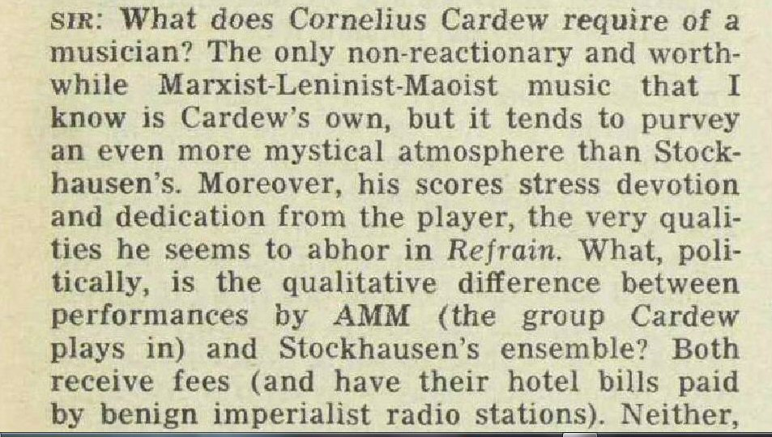
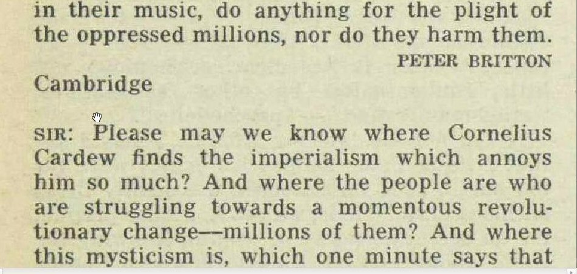
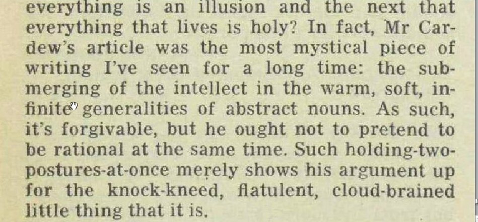

Thursday, December the 27th, 2012
back to: title, date or indexes
When Cornelius Cardew went crackers and became, first a Maoist and then a devotee of Enver Hoxha of Albania, he repudiated much of his own earlier work and the avant garde in general. He turned his fire particularly on Stockhausen, with whom he had worked closely as both student and assistant. In The Listener (15 June 1972), Cardew published a screed with the self-explanatory title “Stockhausen Serves Imperialism”. Here are two letters which appeared in the magazine the following week:

No doubt Messrs Britton and Pullman went straight on to a list of Enemies of the People who would be the first to be executed when the Revolutionary Communist Party of Great Britain (Marxist-Leninist)—described by Richard Gott as among “the more perverse and irrelevant political groupings” of the time—ushered in the glorious proletarian revolution.